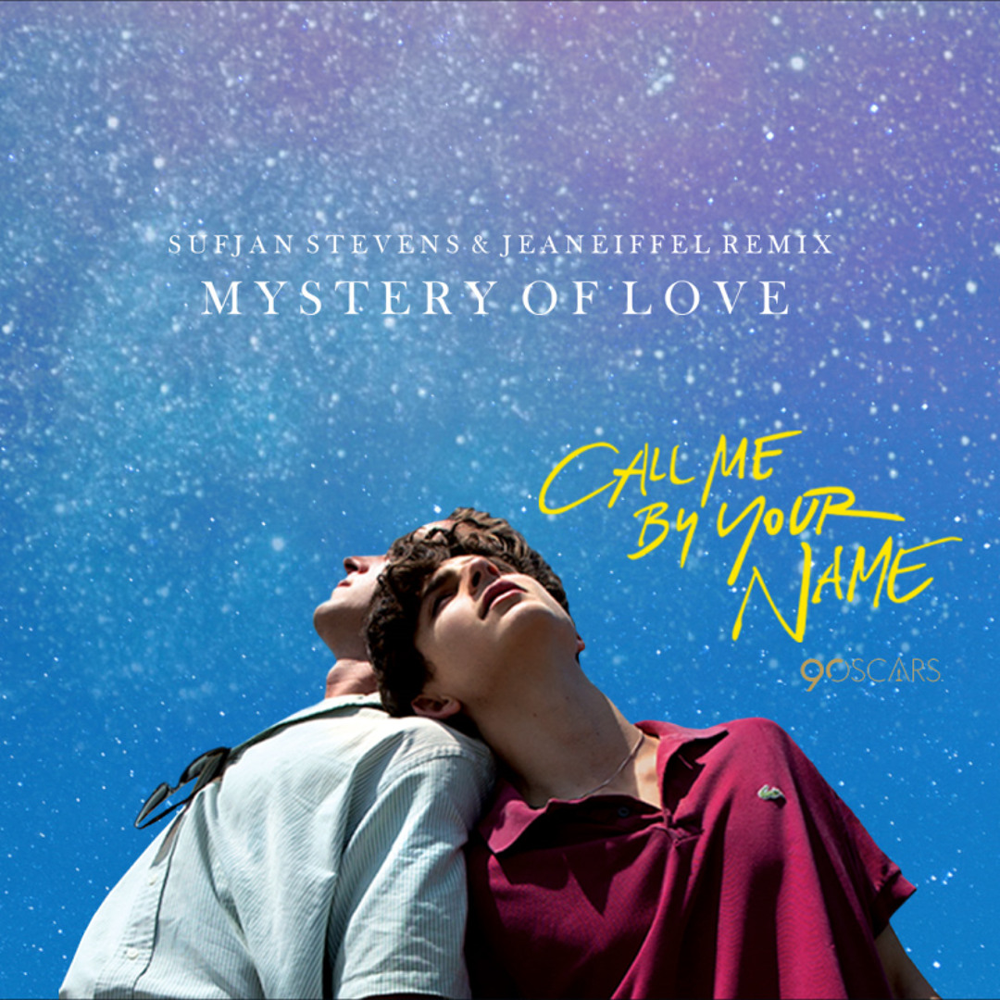

Mystery of Love
A música Mystery of Love, do Sufjan Stevens, fala sobre um amor intenso que, mesmo não durando para sempre, deixa marcas que o tempo não consegue apagar.
Ela representa a beleza de se apaixonar, a dor da saudade e a sensação de que algumas pessoas passam pela nossa vida para nos transformar.
É sobre entender que nem todo amor tem um final feliz, mas isso não significa que ele não tenha sido verdadeiro.
Afinal, existem pessoas que, mesmo depois de irem embora, continuam vivendo em pequenas partes de nós.
